Stilul Modern
Stim instinctiv cand intram intr-o locuinta amenajata in stil modern. Detectam imediat liniile simple, ordinea si prospetimea decorului, aprobam in sinea noastra absenta bibelourilor de pe etajere si spatiul liber, neocupat de piese inutile de mobilier, apoi exclamam placut impresionati: Ce casa moderna! Sigur ti s-a intamplat si tie.
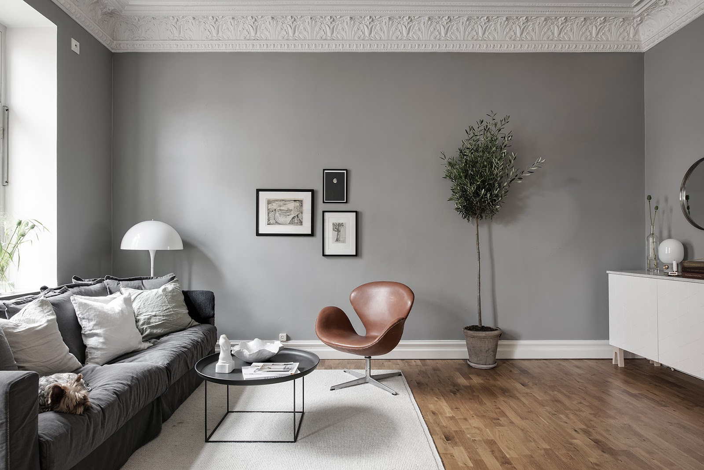Dar ce inseamna de fapt acest modernism care infrumuseteaza spatiile de locuit, cum se deosebeste de alte stiluri si cum il poti obtine in propriul tau camin? Un decor atat de aerisit si luminos, in care predomina materialele noi si designul functional, adaptat perioadei in care traim, ar trebui sa fie simplu de realizat. Dar este oare suficient sa alegi cele mai inovatoare obiecte de mobilier si acele finisaje create datorita progreselor tehnologice ca sa dai caminului tau un aspect modern?
Iti vom arata in acest articol tot ce trebuie sa stii despre amenajarile interioare de case moderne si despre capcanele pe care le poti intampina cand iti propui sa abordezi acest stil decorativ.
Ce inseamna stilul modern in designul interior
Termenul modern se refera la ceva ce apartine epocii actuale, prezentului, de aceea stilul modern este usor de confundat cu stilul contemporan, cu cel scandinav sau cu minimalismul. Adevarul este ca pare paradoxal sa vorbim in secolul XXI despre un stil modern care isi are originea intr-o miscare artistica de la inceputul secolului XX, dar chiar asa este.
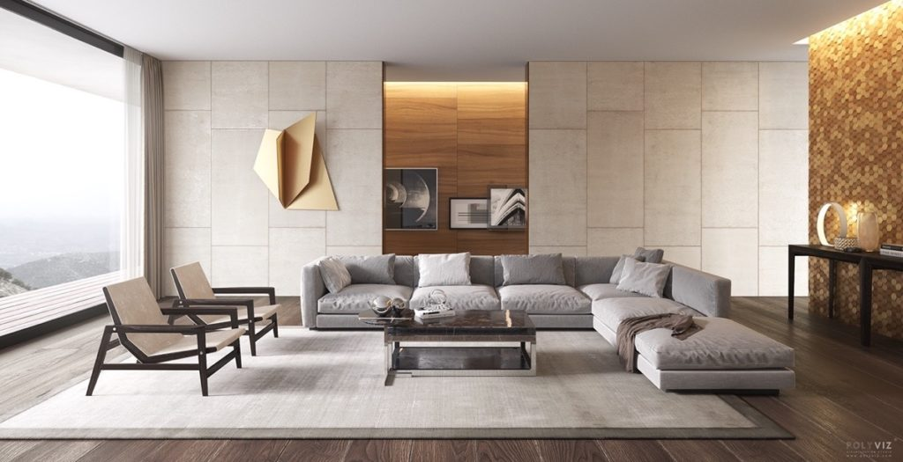In perioada interbelica, designul interior a fost cucerit de un stil neinspirat de vreo epoca istorica sau de referintele culturale ale altor tari, asa cum fusese cazul in stilurile clasic sau rococo. Noua miscare s-a format pe fundamentul Bauhaus, curentul artistic aparut in 1919 la Weimar, care a creat o legatura concreta intre arta si functionalitate, minimizand ornamentele si uniformizand culorile.
Modernismul clasic (1925-1947) se bazeaza in principal pe geometrie si respinge frivolitatea ornamentelor. Efectul acestora este inlocuit de combinatiile interesante de materiale si texturi specifice epocii. Din modernismul original au derivat inca doua stiluri:
- Modernismul clasic american, cunoscut si ca modernismul de la mijlocul secolului (1945-1965)
Dupa cel de-al doilea razboi mondial au capatat din ce in ce mai multa popularitate productia de masa si materialele precum sticla, placajul, cromul, otelul si pielea, iar functionalitatea a ramas caracteristica principala a stilului. Stilul scandinav, popular in casele americanilor din acea perioada, a imprumutat modernismului o caracteristica importanta: formele naturale.
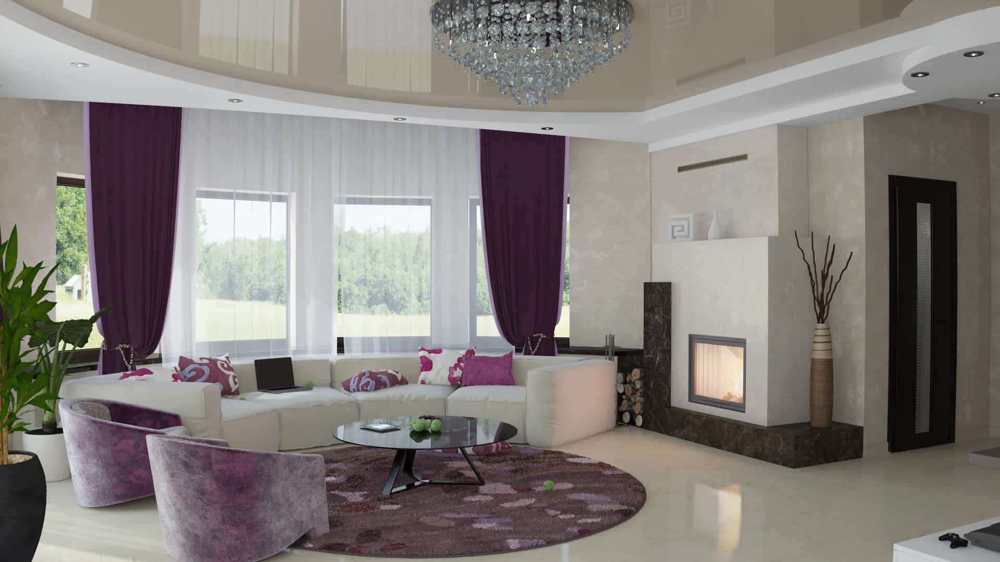- Postmodernismul (1966-prezent)
Postmodernismul a aparut ca o reactie indrazneata la conceptele modernismului, tinzand spre eclectism. In amenajarile postmoderne poti gasi referinte ironice la stilurile clasice, elemente false de structura, mobilier deconcertant, care nu poate fi utilizat, linii frante si asimetrie, in contradictie cu continuitatea si simetria stilului modern.
Ce inseamna stilul modern in designul interior
E usor sa confunzi aceste trei stiluri de design interior, pentru ca toate mizeaza pe un decor simplu, geometric, fara ornamente. Totusi, exista cateva diferente subtile.
Astfel, contemporan este orice obiect de mobilier produs acum, oricand ar fi acel acum. Stilul contemporan din anii 2000 difera de stilul contemporan din prezent, de aceea ar fi poate mai bine sa vorbim in acest caz despre o tendinta de design interior, nu despre un stil propriu zis. Trendul contemporan se modifica de la perioada la perioada, dar nucleul acestuia este reprezentat, ca si in modernism, de simplitate.
Nici minimalismul nu este doar un stil de design interior. Este mai degraba un stil de viata. Spre deosebire de modernism, care incurajeaza alegerea mobilierului simplu si functional, minimalismul promoveaza renuntarea la orice mobilier care nu este esential in incapere.
Poti amenaja o locuinta intr-un stil modern contemporan daca optezi pentru mobilier cu linii simple, dar cu forme unice, inedite. Un decor modern minimalist este compus tot din piese de mobilier cu linii simple, dar acestea trebuie sa fie esentiale in incaperea respectiva si, daca se poate, multifunctionale.
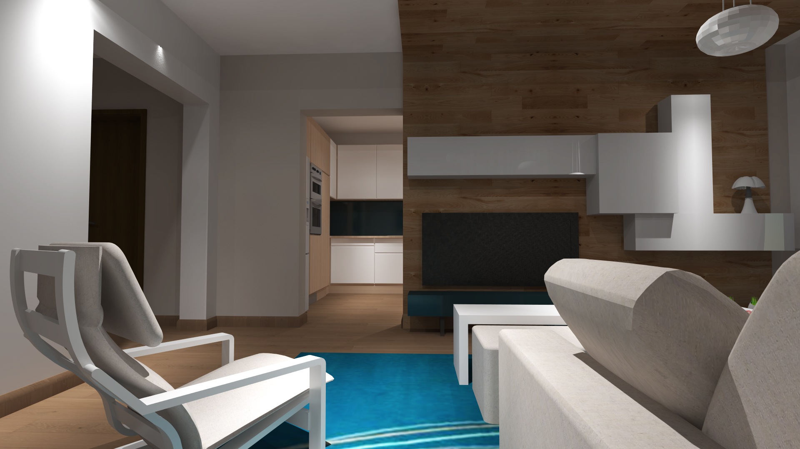Caracteristicile stilului modern in amenajarile interioare
Estetica modernismului a fost puternic influentata de situatia economica din timpul celui de-al doilea razboi mondial si din perioada imediat urmatoare. Nu mai era practic sa pastrezi camere fara o functie clara sau sa te inconjori de obiecte inutile, dar frumoase. Tesaturile bogate, cu imprimeuri intricate si lemnul masiv sculptat au fost inlocuite cu fibre naturale si suprafete netede, lustruite, din metal sau sticla. Formele s-au subtiat si au devenit mai zvelte. Designul oricarui element din decor era bazat pe un ideal pur pragmatic: sa salveze timp, bani si material. Aerul conditionat si incalzirea centrala au eliminat nevoia unor ferestre acoperite cu draperii groase si a podelelor imbracate in covoare groase din lana. Au aparut jaluzelele si parchetul, iar elementele structurale ale cladirilor au inceput sa fie lasate la vedere.
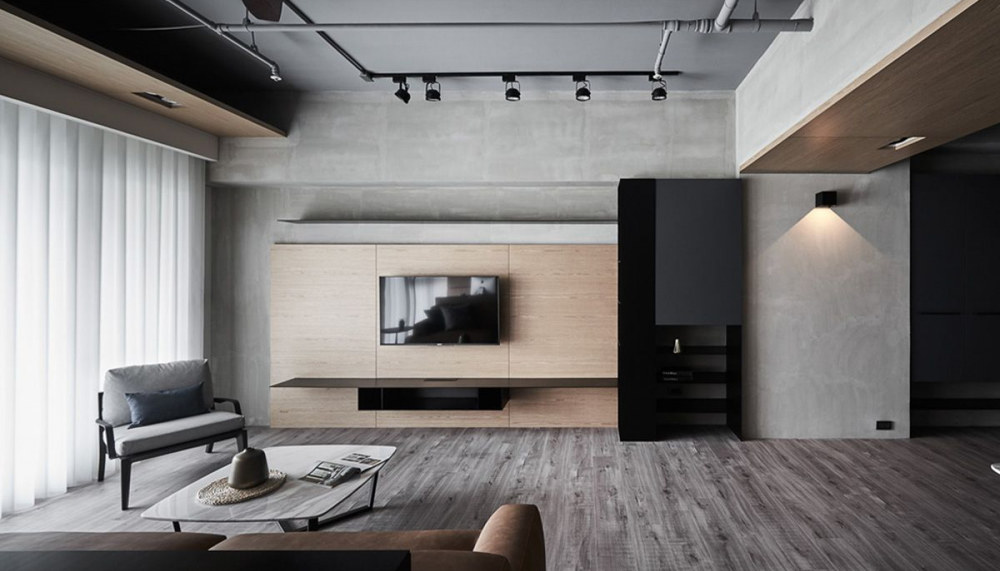Putem recunoaste o camera moderna dupa urmatoarele caracteristici:
- Peretii din caramida, tevile sau alte elemente de structura sunt expuse sau, in alte variante, peretii sunt finisati cu panouri din lemn sau alte materiale pentru a obtine textura.
- Predomina liniile drepte si elegante, dar si formele interesante.
- Geometria designului imbina patrate, dreptunghiuri, cercuri si cuburi intr-un rezultat echilibrat care sugereaza armonia si libertatea formei.
- Mobilierul este scund, cu linii suple si picioare la vedere.
- Sunt frecvente materialele naturale (lemn nevopsit, metal, piele, fibre naturale), dar si sinteticele si imitatiile (nylon, piele ecologica).
- Ferestrele nu sunt decorate.
- Numeroase suprafete reflecta lumina.
- Predomina culorile neutre sau inspirate din natura: alb, crem, bej, maro, taupe, nuante de gri si albastru-verzui.
Mobilierul modern
Ca sa-ti faci mai usor o idee despre ce inseamna mobilierul modern si cum a evoluat, o sa-ti aratam trei piese reprezentative, doua scaune moderne si o masuta de cafea al caror design sustine intocmai principiile acestui stil.
- Scaunul Rosu-Albastru al lui Gerrit Rietveld (1917)
Creatorul acestui scaun si-a propus sa realizeze un obiect usor de produs in masa cu costuri mici. A folosit lamele de fag si cherestea de pin, iar fiecare element al scaunului are un design explicit care-l separa vizual de celelalte.
- Scaunul Barcelona al lui Mies Van Der Rohe si Lily Reich (1929)
Scaunul Barcelona se distinge prin forma in X a picioarelor si prin aspectul gratios si totodata simplu. Barele de otel se curbeaza inedit si se intersecteaza in asa fel incat picioarele din fata sustin spatarul, iar cele din spate sezutul scaunului. Regasim aceasta particularitate de design in numeroase piese moderne de mobilier.
- Masuta de cafea Noguchi (1947)
Masuta Noguchi, o varianta inovatoare a masutei cu trei picioare, are un design organic, simetric si armonios, a carui baza este formata din doua piese de lemn sculptat, identice.
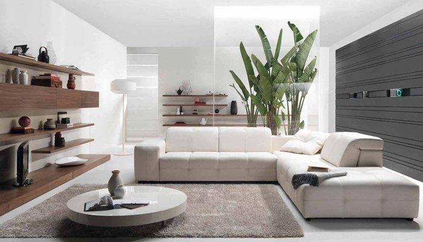Elementele de design biomorfic (mese cu tablii in forma de rinichi, scaune cu spatarul in forma de fluture) sunt frecvente in mobilierul modern, datorita maleabilitatii materialelor folosite. Plasticul, polipropilena, placajul, aluminiul se prelucreaza mult mai usor decat lemnul masiv. Totusi, chiar si atunci cand este utilizat, lemnul este modelat in forme gratioase, evitandu-se aspectul de bloc solid. Fotoliile si canapelele au structuri rezistente din lemn, dar sunt inaltate pe picioare cu o infatisare delicata.
Mobilierul modern are un triplu rol: functional, estetic si de manipulare vizuala a spatiului. Unele piese creeaza impresia unei camere mai mari (scaunele si mesele transparente, din policarbonat), altele inalta optic tavanul (corpurile de biblioteca in forma de trepte). In acelasi timp, rolul functional nu se rezuma la o singura potentiala utilizare.
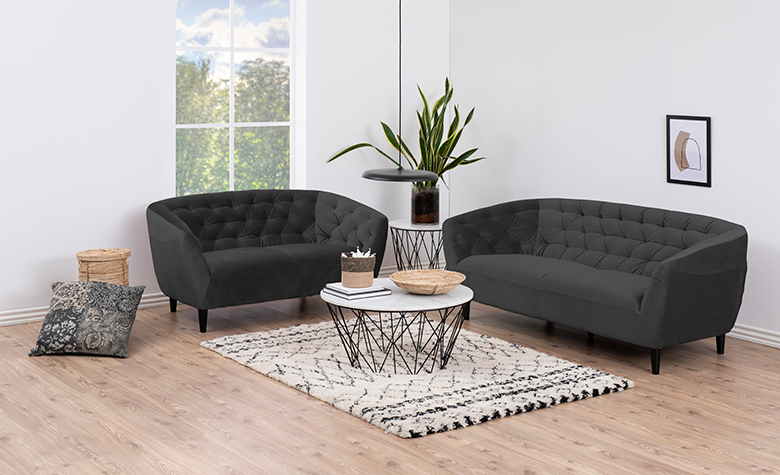O masa moderna este rareori doar o masa. Ea trebuie sa aiba ori facilitati suplimentare (de exemplu, este extensibila sau are un spatiu de depozitare) ori este usoara, si poate fi mutata in functie de nevoie. Apropo de mutarea mobilierului, ce poate fi mai util decat posibilitatea de a reconfigura diversele obiecte dintr-o camera, in asa fel incat sa serveasca unor scopuri multiple? Mobilierul modular, fie ca este vorba despre rafturi, masute sau canapele, este una dintre solutiile deosebit de ingenioase ale stilului modern.
Cum amenajezi un living modern
- Decorul unui living modern ar trebui sa fie, in primul rand, luminos, asa ca incearca sa optezi pentru culori cat mai deschise pentru pereti. Cel mai usor este sa-i zugravesti in alb, dar ai grija! Peretii albi au nevoie de cateva elemente decorative, altfel risti sa obtii o atmosfera fada. Daca te hotarasti sa ii impodobesti cu tablouri, alege doua-trei imagini abstracte sau niste fotografii inramate, in alb-negru. O alta varianta ar fi sa optezi pentru niste finisaje mai altfel pentru pereti. Panourile decorative albe din trestie de zahar, din care se reliefeaza diverse forme geometrice, confera textura peretilor fara sa mai fie nevoie de decoratiuni.
- Daca configuratia apartamentului tau iti permite sa creezi un living open space, care sa cuprinda holul si bucataria, e perfect.
- Evita canapelele cu imprimeuri etnice ori florale, in culori electrizante sau pe cele clasice, cu spatar matlasat si cotiere rasfrante, in favoarea uneia in nuante neutre, cu picioarele expuse.
- Alege perdele transparente, care lasa sa intre multa lumina naturala in incapere.
- Plantele naturale sunt binevenite intr-un living modern, dar ai grija la ghiveci. Evita-le pe cele cu aspect antichizat, din ceramica, sau pe cele excesiv de ornamentate, in stilul amforelor romane, si alege un ghiveci din iuta sau scoarta de salcie.
- Nu aglomera incaperea cu obiecte inutile, chiar daca nu incerci sa dai un aer minimalist livingului. Daca vrei sa incluzi decoratiuni in spatiu, alege unele simple, fara ornamente excesive. 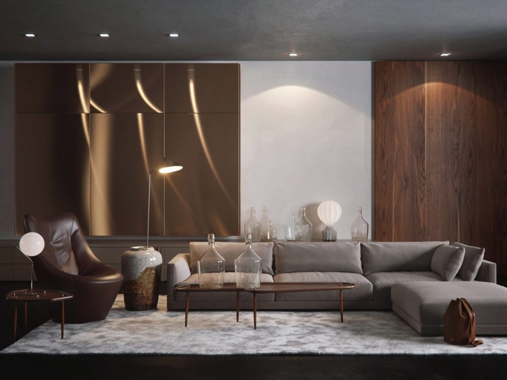
- Asigura-te ca ai suficiente surse de lumina si locuri de asezat.
- In locul fotoliilor poti opta pentru scaune cu un picior, in forma de lalea, pentru unele din polipropilena, cu picioare din lemn sustinute de bare de otel, sau pentru scaune stil otoman, care au spatiu de depozitare integrat si pot fi folosite si ca suport pentru picioare.
- Poti introduce in decor o culoare de accent, insa incearca sa pastrezi o schema cromatica neutra. 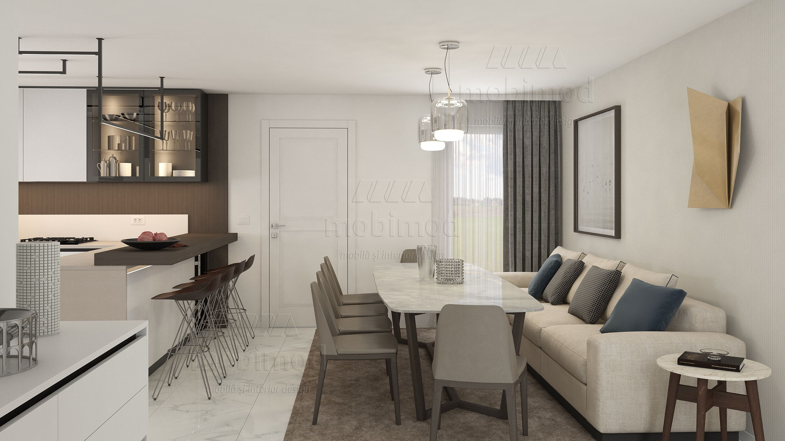
Cum amenajezi un dormitor modern
- Pastreaza si in dormitor o schema cromatica neutra, dar bazata pe nuante lemnoase, mai calde.
- Foloseste eficient spatiul disponibil, inclusiv pervazul, care poate fi transformat intr-un colt confortabil de citit cu ajutorul catorva perne sau al unei banchete.
- Alege noptiere incapatoare si opteaza pentru un pat solid, cu picioare rezistente. Ideal ar fi sa aiba si sertare pentru depozitare. Evita paturile cu tablii din fier forjat, adecvate mai degraba stilului traditional sau celui industrial. 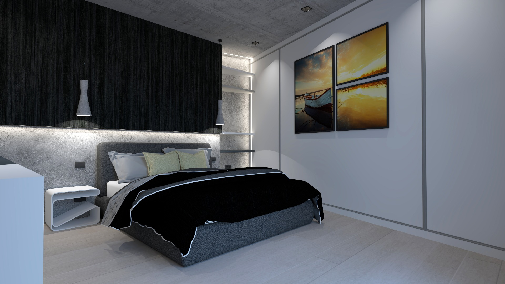
- Opteaza pentru cuverturi monocrome din bumbac, care nu te incalzesc excesiv, si pentru covoare din fibre sintetice, care se curata usor.
- Poti alege panouri din lemn decorative pentru a crea un perete de accent sau, daca vrei sa creezi un dormitor modern cu influente industriale, poti alege ca finisaje pentru pereti un tapet care imita caramida. 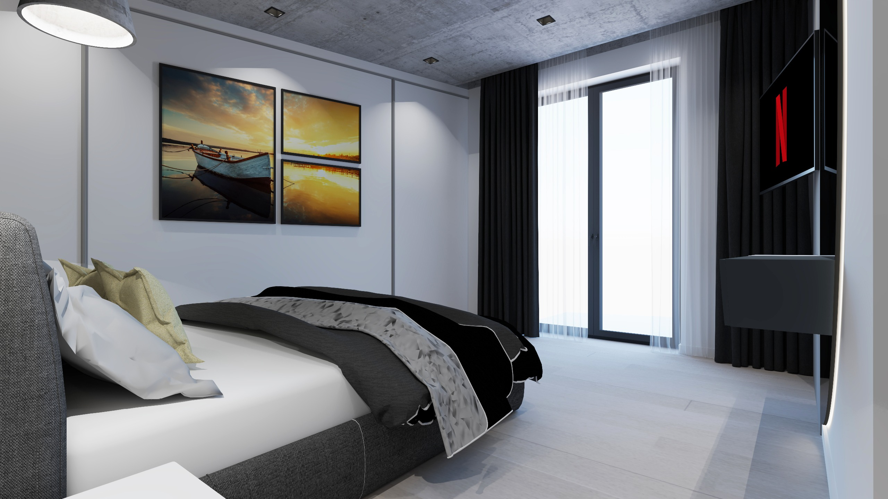
Cum amenajezi o bucatarie moderna
- Bucataria moderna straluceste datorita suprafetelor pe care se reflecta lumina.
- Dulapurile, atat cele suspendate, cat si cele inferioare, au un design curat, fara ornamente.
- Spatiile de depozitare sunt suficiente si ascunse vederii.
- Insula de bucatarie poate fi folosita si ca masa, iar daca bucataria face parte dintr-un open space care include livingul, atunci scaunele de bar din metal cromat, cu tapiteria din piele ecologica, nu au cum sa lipseasca din decor.
- Nu uita sa incluzi in bucataria moderna cele cinci aparate electrocasnice esentiale si pastreaza paleta cromatica intr-o zona neutra, pe care o poti insufleti cu accente metalice. 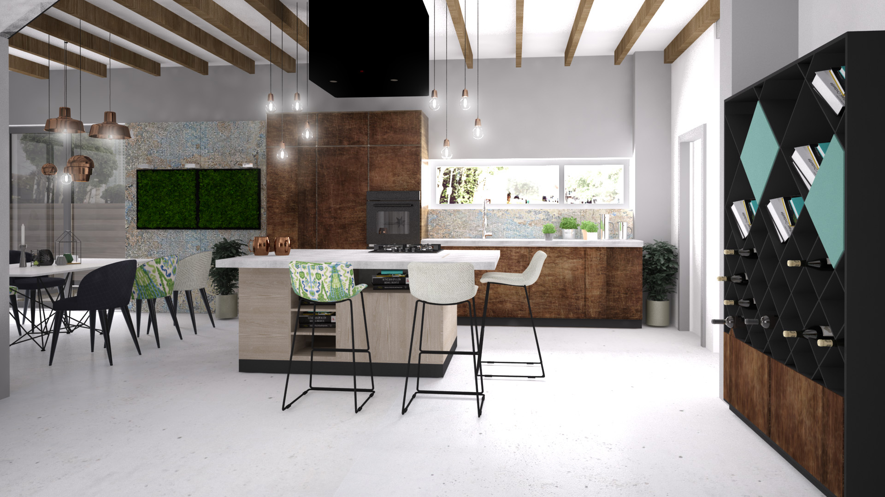
- Alege materiale precum piatra naturala, granitul sau marmura si foloseste spoturi deasupra blatului de lucru, pentru a-ti asigura vizbilitate maxima atunci cand prepari alimentele.
E mai dificil sa obtii un decor modern 100%, fara nicio influenta, mai ales contemporana sau scandinava, insa nici nu este nevoie sa incerci sa faci asta. Cele trei stiluri, la care se adauga si stilul industrial si cel minimalist, se pot imbina armonios intr-o varietate de amenajari care au avantajul ca sunt foarte practice si iti ofera tot confortul dorit. In final, nu-ti ramane decat sa le imbini dupa inspiratie. Este mult mai usor sa amenajezi o locuinta in stil modern cu diverse influente, decat sa creezi un decor rustic sau romantic.